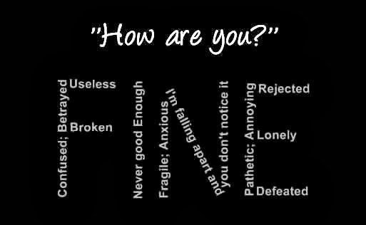

The persistent feeling of sadness or loss of interest that characterizes major depression can lead to a range of behavioral and physical symptoms. These may include changes in sleep, appetite, energy level, concentration, daily behavior, or self-esteem. Depression can also be associated with thoughts of suicide.
A combination of biological, psychological, and social sources of distress
The mainstay of treatment is usually medication, talk therapy, or a combination of the two. Increasingly, research suggests these treatments may normalize brain changes associated with depression.
Click here